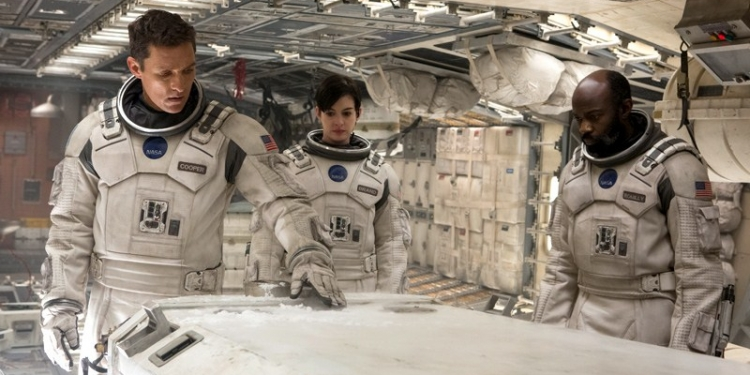
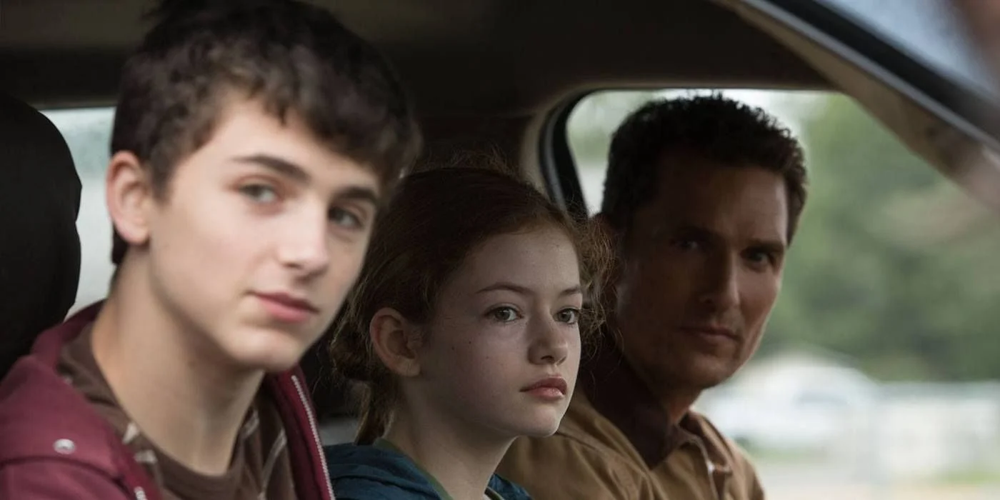

Interstellar‘da yeniden doğum miti ve karanlığın aydınlanması fikrini toplayan şaşırtıcı ve karmaşık bir kurgu söz konusu. Hikâye kurgusu zaten yeterince karmaşık iken Christopher Nolan, metaforlar ve mitolojik anlatımlarla bu kurguyu katman katman örmüş. Filmin içinde gizlenivermiş birçok fikre temas eden gözler, ilk olarak filmin giriş sahnesi görseli ile buluşuyor: Kitaplık. Kitaplığın temsil ettiği çok şey var elbette ancak benim algımın sınırlarında birkaç konu belirdi. Raflardaki kitaplar iki ana öğeyi işaret etmekte: bilimi ve bilgiyi. Kitapların içine yerleştirilen uzay aracı maketi ve kitaplığı kaplayan toz, bilginin sisli bir görüş mesafesinde dahi evrenin derinliklerine ışık tutabileceğini simgeliyor.
Yıllarca uzay aracı pilotluğu üzerine eğitim almasına rağmen uzayı hiç deneyimlememiş olan Cooper’a bu bilgisi hiç fayda getirmiyor. Karşısına çıkan zor görev aslında Cooper için bilgisini deneyimleme imkânı da sunuyor. Bilimin desteği ve mühendislik bilgisiyle yola çıkan Cooper’ın onca yol ve deneyimin ardından vardığı yer ise kitaplığın arkası oluyor. İşte bu çok heyecan verici: “Bilginin varlığına ancak bilginin ardına geçersen tanıklık edersin“. Bilgelik bilgi ile değil, o bilginin ötesini görebilen göz ile geliyor. İlk saniyeden başlayan bu yolculuğun hikâyesi kitaplığın ardında, bilgiden bilgeliğe geçiş ile son buluyor. Nolan’ın katmanlarından birisi böylece soyuluyor filmin başından sonuna.
İkinci katman elbette kahramanımız Cooper’ın yolcuğu üzerine. Dünyayı kurtarmak için yola çıkan Cooper, kendi geleceğini bırakıp, çocuklarını kurtarmak fikrinden beslenerek dünyayı ardında bırakma cesareti buluyor. Kurtarıcı olarak çıktığı yolculukta ise duygusal olarak yenilip durduğu bir döngüye giriyor. İlki, evden ayrılırken kızı ile vedalaşamadan kırık ve buruk bir kalple uzaklaşmasına denk gelmekte. Burukluk hissi ulaştıkları ilk gezegende hayat imkânı bulunmaması ve bir sonraki varış noktasında hayatta kalma güdüsüyle insanlığını bırakan Dr. Mann tarafından aldatılması ile perçinleniyor. Fakat Cooper bu son macera ile çoğu kahramanın geçtiği yoldan geçerek akıllanıyor. Yaşatmanın yaşamaktan üstün olduğunu anlayarak kendini evrenin şefkatli kollarına bırakan Cooper, yenilgiyi kabul edip bilgeliği eline aldığı an kendini ve dünyasını kurtaran adımı atmış bulunuyor.